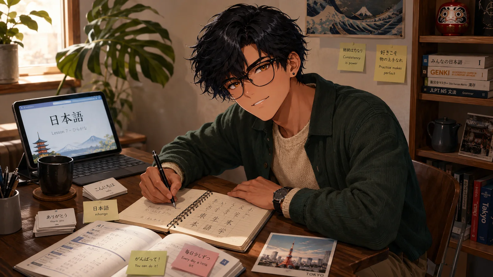
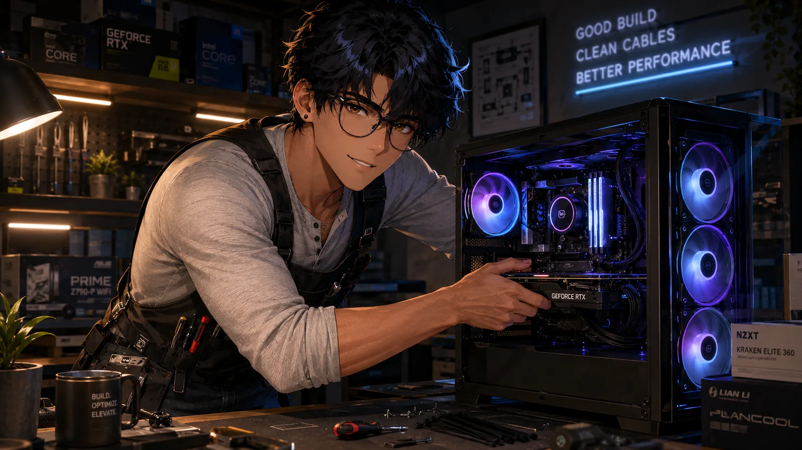

Rocket Raccoon & role balance
Team-up value, healing pressure, damage windows, positioning, and learning when support play should become aggression.
Gaming taught me systems and competition. Travel made the world feel larger and more connected. Language, anime, karaoke, computers, entrepreneurship, and healthcare became different ways of learning how people think—and how I want to live.


Choose a chapter
Use the selector for the overview, then jump into the section that brought you here. Every homepage personality link lands on its matching chapter below.
Strategy, competition, unforgettable worlds, and the occasional ranked-lobby humbling.
Explore Gaming ↓I grew up bouncing between Pokémon, Tekken, city builders, real-time strategy, and story-heavy adventures. That range still defines how I play: I like understanding a system, experimenting with it, and finding the point where mechanics turn into a personal playstyle.
Team-up value, healing pressure, damage windows, positioning, and learning when support play should become aggression.
Nagakiba, Seppuku, Blood Tax, Mohg’s spear, and deliberately lower-Vigor builds that reward execution instead of autopilot.
Matchup planning, team construction, resource management, and the long-running joy of winning because the plan actually worked.
I was born in California, have lived in Texas and Melbourne, and have lived in both the United States and Australia, with family ties across the Pacific. Travel is not just collecting destinations for me—it is food, transit systems, family history, language, everyday routines, and the question of what a good life looks like in different places.
I can enjoy the newest battle shōnen and then pivot straight into a quiet slice-of-life comedy. What matters is momentum: I like stories that feel alive, reward attention, and do not turn entertainment into homework.

I completed a Japanese Language and Culture minor at CSU East Bay and participated in Chuo University’s Academic Language Program in Tokyo. The subject has taken me from Momotarō and Urashima Tarō to modern media, everyday conversation, and the deeper cultural context behind the words.
Formal coursework in language, culture, literature, and the habits needed to keep progressing after class ends.
Language learning became more tangible when it moved from a classroom concept into daily life in Japan.
Building consistency, reading more comfortably, and turning passive recognition into usable language.
Karaoke is one of my favorite versions of being social because perfection is not the point. The best nights are expressive, a little dramatic, and generous—everyone gets a turn, everyone gets hyped up, and the final song feels like a group victory.

I enjoy giving every machine a purpose. One system can be a high-end gaming workstation, another can become a SteamOS console, and an older box can find a second life as a server. The fun is not only buying parts—it is balancing performance, compatibility, thermals, noise, upgrade paths, and value.

I have explored Amazon, eBay, dropshipping, web development, AI agents, and local-business ideas while also studying how established companies think about revenue, risk, customers, and operations. I do not romanticize entrepreneurship as one dramatic leap. I see it as a sequence of experiments: observe, build, measure, learn, and try again with better judgment.
Seeing how real businesses manage cash flow, risk, growth, and customer relationships made entrepreneurship less abstract.
Small digital tools can turn a repeated problem into a process someone can actually use.
Start with the user, learn from the friction, and earn the right to make the idea bigger.
Healthcare is where my different backgrounds meet. Business taught me to organize information and make decisions. Technology taught me to troubleshoot. Direct care taught me that none of it matters if a person feels ignored, unsafe, or reduced to a task list.
ADLs, mobility, comfort, safety, and the small interactions that determine whether care feels human.
Observe changes, document clearly, escalate concerns, and understand that dependable teamwork protects patients.
Building toward RN practice while carrying forward the bedside perspective earned in direct care.
The throughline
The goal is not to collect identities. It is to let each part sharpen the others: healthcare with empathy, business with judgment, technology with creativity, culture with humility, and ambition with enough playfulness to remain myself.
A nursing career where technical growth never replaces humanity.
Games, tools, websites, systems, and whatever curiosity becomes next.
Travel, language, family ties, and a life that remains open to the wider world.
Stability, family, good people, shared traditions, and a home base worth returning to.